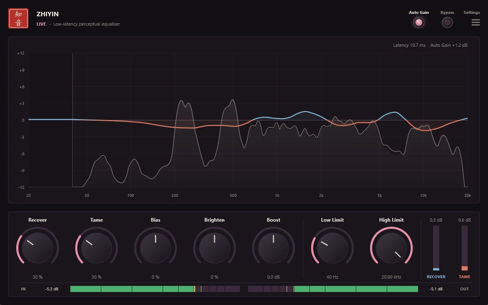
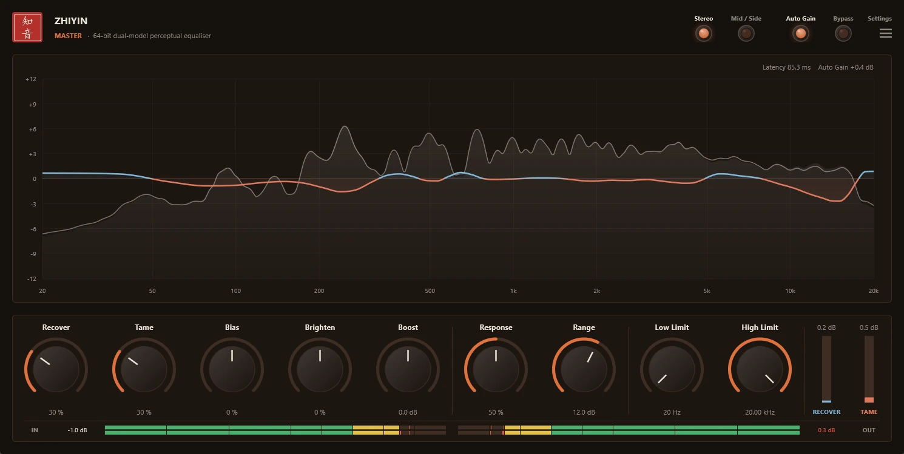
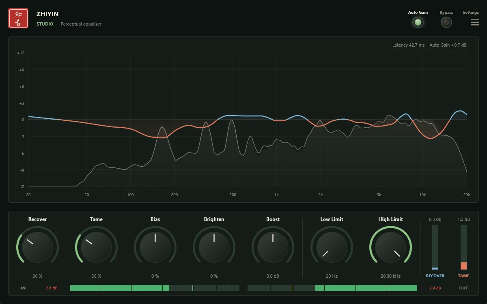

AuraLink Studio / Zhiyin
Official release v1.0.0 · Windows · VST3Rebalance the tone
the way ears hear.
Zhiyin listens to the music the way your ears do and keeps adjusting one smooth EQ curve: it pulls down the harsh, boomy, resonant parts that dominate, and lifts detail that is there but covered up. There are no bands to place — you choose how much and which way to lean; the plugin decides where to act, moment by moment.
Available for Windows 10/11 (64-bit), in any VST3 host. The download contains all three editions: Studio, Live and Master.



No bands to place. Just listen.
An ordinary EQ makes you hunt down each problem frequency — and they move with every section of the song. Zhiyin keeps track of that for you, at every moment.
- Tames harshness, boom and resonanceFrequencies that stick out and dominate are pulled down exactly when they appear — and released when they go.
- Recovers buried detailFrequencies that are present but covered by louder neighbours are lifted just enough for the ear to hear them clearly again.
- Two knobs set the directionBias leans towards recovering or taming; Brighten tilts the balance towards the highs or the lows.
- Honest comparisonsAuto Gain keeps perceived loudness constant and Bypass keeps the same latency — switch it and you hear the change in tone, not in volume.
- Fence off what you want left aloneLow Limit and High Limit spare the kick, the bass or the air on top, with a smooth fade at each edge.
- Leaves the noise floor aloneSilence and noise are never “corrected”, and nothing is lifted that sits too far down for any boost to make it audible.
One pair of ears, three jobs.
Pick by the job at hand: mixing, tracking and live, or mastering. All three come in the same download.
Studio
For mixing, tracks and buses. High resolution in the bass. Bamboo Grove green.
- Latency (48 kHz)42.7 ms
- Processing32-bit
- Max correction±12 dB
Live
For tracking with monitoring and live performance: low latency for real-time use. Lotus pink.
- Latency (48 kHz)10.7 ms
- Processing32-bit
- Max correction±9 dB
Master
For mastering and bus finishing: adds Response, Range and Stereo / Mid-Side. Maple Leaves orange.
- Latency (48 kHz)85.3 ms
- Processing64-bit, dual model
- Max correction3–18 dB (Range)
The defaults are gentle. Most material needs 20–50 %.
Mix bus and groups
Studio: Recover 30–40 %, Tame 30–50 %. Set Low Limit around 60–80 Hz to leave the kick and bass untouched.
Vocals
Tame handles harsh resonances and the sibilance region; Recover brings back the clarity the backing covers. A High Limit of 12–16 kHz keeps the air.
Mastering
Master: Range 3–6 dB, Response 30–50 %, gentle settings. Use Mid / Side when the sides need their own treatment.
Copy into the VST3 folder, rescan, done.
Unzip the download, copy Zhiyin Studio.vst3, Zhiyin Live.vst3 and Zhiyin Master.vst3 into C:\Program Files\Common Files\VST3, then open your DAW and rescan — all three appear under the vendor AuraLink Studio. The interface speaks English, Vietnamese and Chinese.